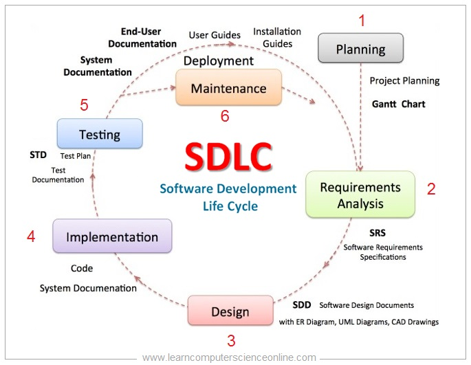

Styles
SDLC - Software Development Lifecycle
- 1. Planning stage
- 2. Analysis stage
- 3. Design stage
- 4. Coding stage
- 5. Testing stage
- 6. Deployment stage
- 7. Maintenance stage


Planning
Requirements analysis and planning are the keys to the success of an implementation.
Defining The Application
- 1. Identify Key Stakeholders and End-Users
- 2. Capture Requirements
- 3. Categorize Requirements
- 4. Interpret and Record Requirements
- 5.Sign off
Advantages
- Reduces Uncertainty
- Focus on Objectives/Goals
- Economical Operation
- Facilitates Control
- Encourages Innovation and Creativity
Disadvantages
- Lack of Reliable Data
- Rigidity
- Time Consuming Process
- Costly Process
- Rapid Change
Analysis
The Analysis Phase is where you break down the deliverables in the high-level Project Charter into the more detailed business requirements. The Analysis Phase is also the part of the project where you identify the overall direction that the project will take through the creation of the project strategy documents.
Advantages
- Fairly cheap method of gathering data
- Questions can be answered quickly
- Answers are more honest as the questions can be answered anonymously
- Answers to the questionnaries can be analysed automatically
Disadvantages
- People often do not complete or return the questionnaire
- Unclear questions cannot be explained
- You may get incorrect data
- It is difficult to ask very technical or specific questionns
Design
Defining requirements creates the foundation of a successful business intelligence (BI) solution by documenting what will be built. The categories of requirements are:
- Empathize—Research Your Users' Needs.
- Define—State Your Users' Needs and Problems.
- Ideate—Challenge Assumptions and Create Ideas.
- Prototype—Start to Create Solutions.
- Test—Try Your Solutions Out.
The list of requirements that is developed in the definition phase can be used to make design choices. In the design phase, one or more designs are developed, with which the project result can apparently be achieved. Depending on the subject of the project, the products of the design phase can include dioramas, sketches, flow charts, site trees, HTML screen designs, prototypes, photo impressions and UML schemas. The project supervisors use these designs to choose the definitive design that will be produced in the project. This is followed by the development phase. As in the definition phase, once the design has been chosen, it cannot be changed in a later stage of the project.
Advantages
- it brings out (unearths) the creative potential of the learner.
- It suppresses the spirit of copying in class
- It is student-centred as learners play active role in planning the practical lesson and skills.
Disadvantages
- It is less economical since one requires stationery and quite a lot of materials to present the various stages.
- It is time consuming to go through the lengthy process before the realisation.
Design Deliverables
Marge knows taht systems come in all shapes and sizes. While the SDLC guides system development,not every last step can,or should,be performed in all projects. There are always different flavors to the process.Some projects also develop their security plans,disaster recover plans,and other components in this phase. Marge makes a list of elements that might also be started during the design phase:
Data Retention Plan
Disaster Recovery plan
Unit and Integration Test Plans
Data Conversion and Migration Plans
Implemetation and coding phase quizz
1)The product won't work according to customer(4)
2)Requirements gathering and analysis(4)
3)Requirements/analysis specification and design documents(2)
4)The project team only has one opportunity(3)
5)The actual product is created,and coding(2)
4/5 are correct
Implementation / coding
Implementation/Coding starts once the developer gets the Design document. The Software design is translated into source code. All the components of the software are implemented in this phase.
Advantages
- Minimal Complexity
- Risk of project failure is reduced
- Enhanced Efficiency
Disadvantage
- A terrible standard because it is not accesible for all people
Testing
Testing starts once the coding is complete and the modules are released for testing. In this phase, the developed software is tested thoroughly and any defects found are assigned to developers to get them fixed.
Advantages
- This model is a simple, and easy to manage
- This model is perfect for standard projects with fixed requirements.
- Enhanced Efficiency
Disadvantages
- This approach is not suitable for complex projects
- Most of the disadvantages of Waterfall model applies to this model as well
- This model ships only once in the entire lifecycle.
Deployment
The deployment phase is the final phase of the software development life cycle (SDLC) and puts the product into production.
Advantages
- The flexible package creation and release.
- It works for large teams, primarily when there are planned releases.
Disadvantages
- It requires the infra to be flexible enough to support it.
- It requires time to control what can be merged on master before the package creation.
- It will require good ability with the version control system.
Maintenance
The final stage is maintenance. After the deployment of a product on the production environment, maintenance of the product i.e. if any issue comes up and needs to be fixed or any enhancement is to be done is taken care by the developers.
Advantages
- Follows a schedule- By following a schedule, you are able to keep to a budget while maintaining your building. Also you will be able to keep track of all your equipment and pin point times when you will need to replace your equipment.
- Longer equipment/building life- When equipment is being checked and maintained, it will be kept in its best shape, therefore extending its lifetime. With routine check-ups on building parts such as pipes, boilers, and roofing you’ll extend the life of your building as well.
Disadvantages
- More money upfront- When initially starting a preventative maintenance plan, it will cost you more to regularly maintain equipment and the building, than it would be if you waited for things to simply break down.
- More workers- Preventative maintenance require more workers because regular checks are a must. When compared to reactive maintenance, you simply need to call someone in for a onetime fix. Instead this method requires workers to always be on site and perform daily works.
Beta
Beta, named after the second letter of the Greek alphabet, is the software development phase following alpha. Software in the beta stage is also known as betaware. A beta phase generally begins when the software is feature complete but likely to contain a number of known or unknown bugs.
Team and Roles
- Customer
- Project Manager
- Software Architect
- UX Designer
- Developer
- Tester

RC
A release candidate (RC), also known as "going silver", is a beta version with potential to be a stable product, which is ready to release unless significant bugs emerge. In this stage of product stabilization, all product features have been designed, coded and tested through one or more beta cycles with no known showstopper-class bugs. A release is called code complete when the development team agrees that no entirely new source code will be added to this release.
RTM
Release to The Web.The term release to manufacturing (RTM), also known as "going gold", is a term used when a software product is ready to be delivered. This build may be digitally signed, allowing the end user to verify the integrity and authenticity of the software purchase. A copy of the RTM build known as the "gold master" or GM[11][12] is sent for mass duplication or disc replication if applicable. This terminology is taken from the audio record making industry, specifically the process of mastering. RTM precedes general availability (GA) when the product is released to the public